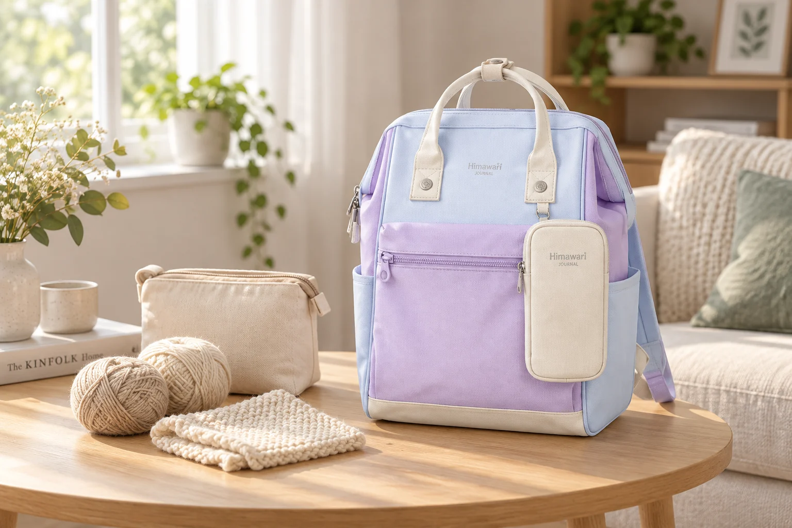

뜨개 작업을 담는 백팩, 실이 지퍼 밖으로 나오지 않게

백팩을 열어 뜨개 작업물을 꺼내려는데 실 한 가닥이 다른 물건 쪽으로 이어져 있다면, 먼저 어느 부분이 함께 움직이는지 보게 됩니다. 작업물과 실뭉치를 한 가방에 넣었다고 반드시 한 묶음으로 잡히는 것은 아닙니다. 취미 짐을 담는 백팩에서는 작업을 멈춘 상태의 외형과 작은 도구의 위치, 가방 여밈 가까이에 남는 부분을 함께 살펴볼 수 있습니다.
작업물을 이동할 상태로 정리하는 방법은 사용하는 도구와 작업 안내를 따릅니다. 그 상태를 별도 파우치나 보관품에 담는다면 밖으로 나온 부분이 있는지 봅니다. 백팩에서는 닫힌 작업 묶음 전체를 놓고 주변 물건과 어떻게 접하는지 확인합니다. 실뭉치 하나의 크기보다 작업물과 도구가 합쳐진 외형이 실제로 필요한 공간입니다. 작업이 커지면 같은 파우치의 두께도 다시 봐야 합니다.
실의 끝이 놓일 곳과 백팩 입구
작업 파우치를 닫았을 때 실이나 도구가 여밈 밖으로 남는지 먼저 살펴봅니다. 보관품이 안내하는 정리 상태를 유지하면서 백팩에 넣을 수 있어야 합니다. 백팩 지퍼를 살짝 열어 실을 밖으로 빼놓는 구성으로 이동 준비를 끝내지 않습니다. 작업을 사용할 때와 이동할 때의 모양을 나누면, 가방 입구에서 무엇이 함께 움직이는지 확인하기 쉽습니다.
실을 잡아당겨 위치를 알아내기보다 백팩을 내려놓고 닿는 부분을 봅니다. 파우치 밖으로 나온 부분이 열쇠나 충전선 사이에 걸렸다면 어느 물건부터 분리할 수 있는지 확인합니다. 한꺼번에 작업물을 들어 올리면 다른 짐이 따라올 수 있으므로 각각 받칠 위치를 마련합니다. 다음 준비에서는 그 접촉이 생긴 자리를 기준으로 작업 파우치와 개인 소품의 위치를 나눕니다.
백팩의 작은 칸에 실뭉치를 따로 넣고 작업물은 큰 칸에 두는 배치도 생각할 수 있습니다. 다만 두 부분이 실제로 연결된 상태라면 가방 안에서 하나의 경로가 생깁니다. 작업 안내에 맞는 보관 구성을 먼저 정하고, 함께 움직여야 할 것은 한 묶음으로 가져올 수 있는지 봅니다. 포켓 수에 맞춰 물건을 흩어 넣기보다 작업을 꺼낼 단위를 유지하는 방식입니다.
파우치를 통째로 꺼내는 선택
밖에서 사용할 때에는 백팩을 안정된 위치에 놓고 작업 묶음을 통째로 꺼낼 수 있습니다. 가방 입구를 계속 연 상태로 실뭉치만 안에 남겨 쓰는 방식이 번거롭다면 별도 보관품을 가까이 두는 구성을 비교해봅니다. 작업 파우치가 놓일 면과 개인 가방의 자리를 나누면 지갑이나 연락 도구를 찾는 동안 작업물까지 옮길 범위가 줄어듭니다.
Himawari No.1027 라벤더의 카탈로그 외부 크기는 28 × 40 × 17cm입니다. 작업 파우치를 함께 담을 후보로 본다면 이 외부 크기와 실제 내부 공간을 구별합니다. 평소 짐을 넣은 뒤 작업 묶음이 어떤 방향으로 들어가고 잡히는지 확인합니다. 비교할 대상은 자신이 닫아 가져갈 작업 파우치의 전체 외형입니다.

도구를 담은 별도 케이스가 있다면 작업 파우치와 함께 꺼낼 위치를 정합니다. 작은 도구를 백팩 바닥이나 다른 소지품의 틈에 임시로 넣으면 작업을 마친 뒤 여러 곳을 다시 찾아야 합니다. 사용하는 보관품이 작은 도구를 어떤 방식으로 담도록 안내하는지 확인하고 그 구성을 유지합니다. 백팩에서는 큰 작업 묶음과 작은 도구 묶음이 각각 어디에 있는지 알아볼 수 있어야 합니다.
작업 파우치의 손잡이나 여밈도 백팩의 끈과 겹치는지 봅니다. 파우치를 꺼내려다 가방 지퍼 장식까지 함께 당기게 된다면 겹친 위치를 정리합니다. 파우치에 빈 공간이 남는다는 이유로 열쇠나 충전 도구를 함께 더하지 않아도 됩니다. 함께 쓰는 재료와 개인 소지품의 경계를 유지하면 가방을 여는 목적이 바뀔 때도 물건을 다시 분류할 필요가 적어집니다.
작업이 커진 날에는 가방에서 다시 비교한다
같은 뜨개 작업을 계속해도 작업물의 부피는 달라질 수 있습니다. 처음에 잘 들어갔던 파우치가 닫기 어려워졌다면 더 눌러 담기보다 현재 외형을 다시 봅니다. 사용하는 보관품을 바꿀지, 다른 개인 짐을 줄일 수 있는지, 별도 가방이 필요한지 선택할 수 있습니다. 작업을 담은 묶음의 크기가 달라진 날은 가방 안의 배치를 다시 정할 때입니다.
백팩에 책이나 파일도 있다면 작업 파우치가 놓일 면을 따로 확인합니다. 부드러운 작업물이 있다고 단단한 도구 사이의 빈틈을 모두 채우는 받침으로 쓰지 않습니다. 작업물을 꺼낼 때 주변 물건이 따라 움직이는지, 파일을 빼면 파우치가 다른 쪽으로 기울어지는지 봅니다. 큰 묶음끼리의 위치가 정해지면 작은 소품이 갈 곳도 분명해집니다.
작업을 중단하고 이동할 때에는 사용한 도구를 정리한 뒤 파우치가 닫힌 상태인지 봅니다. 백팩으로 돌아오는 묶음이 출발할 때와 같은지 확인합니다. 실이나 도구가 손에 남아 있는데 가방부터 메야 하는 상황이라면 잠깐 받칠 곳을 마련해 순서를 나눕니다. 작업물을 백팩 안에 먼저 밀어 넣고 나머지 부분을 나중에 따라 넣는 방식이 반복된다면 보관 단위를 다시 정할 수 있습니다.
귀가 뒤에는 작업 묶음을 통째로 꺼내 보관 자리로 옮깁니다. 백팩에는 그날 쓰지 않은 작은 도구가 남지 않았는지 실제 칸을 살펴봅니다. 다음 외출에 같은 작업을 가져갈 계획이어도 이동할 때의 외형은 다시 확인합니다. 가방을 바꾸는 경우에는 작업 파우치를 유지하되 새 입구와 다른 짐의 배치를 비교하면 됩니다. 이전 포켓 위치를 그대로 기대할 필요는 없습니다.
다음 준비의 기준은 실을 많이 가져갔는지보다 어떤 순간에 백팩과 작업 묶음이 함께 움직였는지일 수 있습니다. 지퍼에 가까웠던 부분, 파우치를 잡으려다 옮겼던 개인 물건을 떠올려봅니다. 그 위치 하나를 바꾸어도 작업을 꺼내고 되담는 과정이 달라질 수 있습니다. 실과 도구가 준비된 작업 묶음 안에 남고, 백팩은 그 묶음을 통째로 옮기는 역할을 맡도록 정리해봅니다.